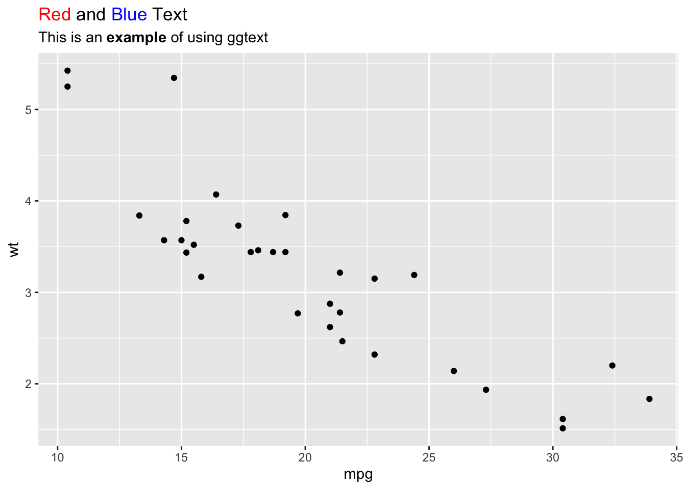

p1<-data |>ggplot(aes(x = year, y= box_office, fill = genre))+## 'mirror' which stacks symmetrically around the x axisgeom_stream(type ="mirror")+geom_stream_label(aes(label = genre), type ="mirror",col ="grey20")+ggtitle("mirror")p2<-data |>ggplot(aes(x = year, y= box_office, fill = genre))+## 'ridge' which stacks from the x-axisgeom_stream(type ="ridge")+geom_stream_label(aes(label = genre), type ="ridge")+ cowplot::theme_minimal_vgrid(font_size =18) +ggtitle("ridge")library(rcartocolor)p3<-data |>ggplot(aes(x = year, y= box_office, fill = genre))+## 'proportional' คล้ายกับ 100%-stacked area chartgeom_stream(type ="proportional")+geom_stream_label(aes(label = genre), type ="proportional",col ="grey20")+ggtitle("proportional")+ cowplot::theme_cowplot(font_family ="ChulaCharasNew")+scale_fill_carto_d(palette =1)+scale_y_continuous(labels = scales::percent_format(1))p1/p2/p3
“The alluvial plots implemented here can be used to visualize frequency distributions over time or frequency tables involving several categorical variables.””
“A pie chart divides a circle into multiple sections where the arc lengths (and so also the areas) of the sections represent proportions of a whole. A moon chart, similarly, divides a circle into sections where the areas represent proportions of a whole, but in a moon chart the areas are drawn as crescent or gibbous portions of a circle—like the phases of the moon.”
“gggibbous extends the ggplot2 data visualization package to provide support for moon charts in R. Unlike the pie charts supported natively by coord_polar() in R, moon charts in gggibbous do not require any special coordinate system. They are drawn most similarly to points in ggplot2: their position is defined by an x and a y coordinate and their size is defined independently of the coordinate system, so they always remain circular.”
The following objects are masked from 'package:ggridges':
scale_point_color_continuous, scale_point_color_discrete,
scale_point_colour_continuous, scale_point_colour_discrete,
scale_point_fill_continuous, scale_point_fill_discrete,
scale_point_size_continuous
data <-read_csv("/Users/choat/Documents/GitHub/datakruroo.github.io/DataVisualization/week01/learning_data.csv")
Rows: 385 Columns: 11
── Column specification ────────────────────────────────────────────────────────
Delimiter: ","
chr (2): gender, department
dbl (9): student_id, choose_method, concepts, interpretation, research_score...
ℹ Use `spec()` to retrieve the full column specification for this data.
ℹ Specify the column types or set `show_col_types = FALSE` to quiet this message.
“The ‘ggpubr’ package provides some easy-to-use functions for creating and customizing ‘ggplot2’- based publication ready plots.”
“{ggstatsplot} is an extension of {ggplot2} package for creating graphics with details from statistical tests included in the information-rich plots themselves. In a typical exploratory data analysis workflow, data visualization and statistical modeling are two different phases: visualization informs modeling, and modeling in its turn can suggest a different visualization method, and so on and so forth. The central idea of {ggstatsplot} is simple: combine these two phases into one in the form of graphics with statistical details, which makes data exploration simpler and faster.”
“ggforce is a package aimed at providing missing functionality to ggplot2 through the extension system introduced with ggplot2 v2.0.0. Broadly speaking ggplot2 has been aimed primarily at explorative data visualization in order to investigate the data at hand, and less at providing utilities for composing custom plots a la D3.js. ggforce is mainly an attempt to address these “shortcomings” (design choices might be a better description). The goal is to provide a repository of geoms, stats, etc. that are as well documented and implemented as the official ones found in ggplot2.”
library(ggplot2)library(ggtext)ggplot(mtcars, aes(mpg, wt)) +geom_point() +labs(title ="<span style='color:red'>Red</span> and <span style='color:blue'>Blue</span> Text",subtitle ="This is an **example** of using ggtext" ) +theme(plot.title =element_markdown(),plot.subtitle =element_markdown() )

การสร้างกล่องข้อความในแผนภาพ
library(ggplot2)library(ggtext)ggplot(mtcars, aes(mpg, wt)) +geom_point() +labs(caption ="This is a **custom caption** with a textbox" ) +theme(plot.caption =element_textbox_simple(fill ="lightblue", color ="black", box.color ="darkblue", size =12, padding =unit(c(4, 4, 4, 4), "pt") ) )
Note: You provided a user-specified grid. If this is a generally-useful
grid, please consider submitting it to become a part of the geofacet
package. You can do this easily by calling:
grid_submit(__grid_df_name__)
Note: You provided a user-specified grid. If this is a generally-useful
grid, please consider submitting it to become a part of the geofacet
package. You can do this easily by calling:
grid_submit(__grid_df_name__)